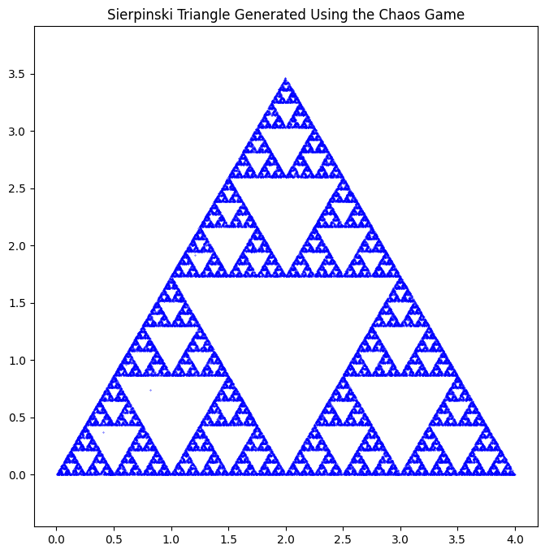
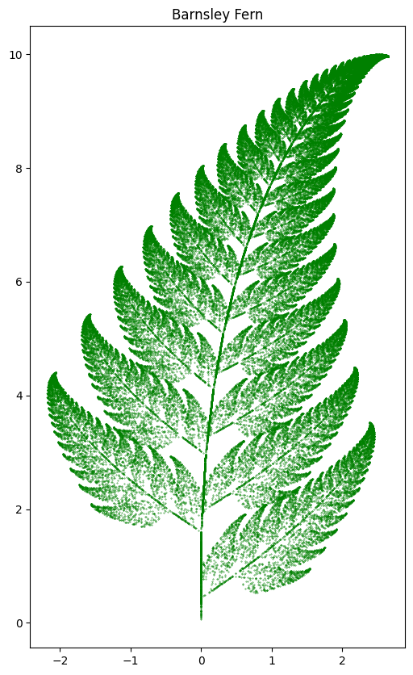
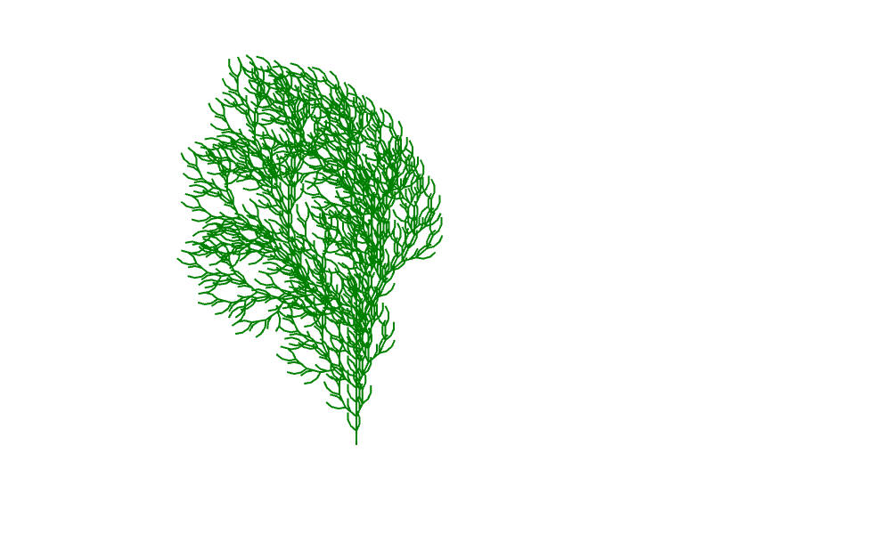

Introduction
In this final lab we are presented with three sets of codes, which are as follows: Chaos Game, L-systems, and Hilbert curves. Before I discuss the goals I have for this lab, I would like to define what each of the three terms that were previously listed are. The Chaos Game is a set of code that uses randomness and iterations to produce fractals. In this case, the code was used to produce a Sierpenski triangle, which we did in a previous lab. Aside from this, we can use the Chaos Game to produce: Sierpinski carpets, Dragon curves, hexagon-shaped fractals, or Barnsley ferns. The L-systems, also known as the Lindenmayer systems, are used to create complex shapes and patterns (fractals or plants) using formal grammar. It is often used to make This "formal grammar" which will be discussed in more depth in other sections of this report. L-systems can be used in video games, to produce plants/trees, cell division, roads, Koch snowflakes, Dragon curves, and Peano curves. A Hilbert curve is a type of L-system, where a pattern is created in the form of a square on a two-dimensional plane. As a result of this lab, I would like to use each of the code types to produce a different variation of the base code as well as use it to present other types of fractals or structures. For example, I will use the Chaos Game to produce an altered version of the Seirpinski triangle but also attempt to create a Dragon Curve (or any other example that I listed). I am not familiar with a Peano so I hope to produce that with the L-system. Lastly, I would like to make a more complex version of the Hilbert curve.
Below I will present all of the original code of each of the code types that I have discussed above. Along with the code, I'll explain each function of the code and display an image of what is produced as a result of this code. The first set of code presented is the Chaos Game representation of the Sierpinski Triangle.
import matplotlib.pyplot as plt
from random import random, randint
import numpy as np
def midpoint(P, Q):
return (0.5*(P[0] + Q[0]), 0.5*(P[1] + Q[1]))
vertices = [(0, 0), (2, 2*np.sqrt(3)), (4, 0)]
iterates = 50000
x, y = [0]*iterates, [0]*iterates
x[0], y[0] = random(), random()
for i in range(1, iterates):
k = randint(0, 2)
x[i], y[i] = midpoint( vertices[k], (x[i-1], y[i-1]) )
plt.figure(figsize=(8, 8))
plt.scatter(x, y, color = 'b', s=0.1)
plt.title('Sierpinski Triangle Generated Using the Chaos Game')
plt.axis('equal') # Ensure aspect ratio is equal for an equilateral triangle
plt.show()
In the code above we notice that there are a few new lines of code that we have not encountered yet. randint is a code that imports the use of random integers in the line of code. The midpoint(P, Q) is defined specifically to find the midpoint between both the x and y coordinates. More specifically 0.5*(P[0] + Q[0]) determine the midpoint of the x coordinates. 0.5*(P[1] + Q[1]) calculated the midpoint of the y-coordinate. The "vertices=" and what follows, explicitly identifies the vertices of the triangles. Next in the line of code, we use iteration. First, we define how many times we are iterating, which in this case is 50,0000 times. I noticed that when the number decreases then the figure is less defined. At first, I was a bit confused about what x, y = [0]*iterates, [0]*iterates and x[0], y[0] = random(), random() meant. After a bit of research, I noticed that the first set of code essentially is a placeholder for the number of coordinates based on the number of iterations. The second line of code x[0], y[0] = random(), random(), assigns a random number for the starting x and y value. for i in range(1, iterates): k = randint(0, 2) x[i], y[i] = midpoint(vertices[k], (x[i-1], y[i-1])) This code above determines where the next plot of will be depending on the vertices defined above. k is defined by choosing a random vertice as they are specified in previous lines of the code. randin(0,2) chooses a random number ranging from 0 to 2 (which are the number of the vertices we have). We need this line of code to determine where the next point is plotted depending on the vertices location, and the midpoint of an x- y-coordinate (specifically half way to the randomly selected vertex). The remainder of the code is similar to what we hace previously seen. We can determine the figure size, title and size of the axis. plt.scatter(x,y, color='b',s=0.1) determines the color of the dots in the scatter plot as well as its size.

import random
import matplotlib.pyplot as plt
# Define the transformation functions
def f1(x, y):
x = 0
y = 0.16 * y
return x, y
def f2(x, y):
x_new = 0.85 * x + 0.04 * y
y_new = -0.04 * x + 0.85 * y + 1.6
return x_new, y_new
def f3(x, y):
x_new = 0.2 * x - 0.26 * y
y_new = 0.23 * x + 0.22 * y + 1.6
return x_new, y_new
def f4(x, y):
x_new = -0.15 * x + 0.28 * y
y_new = 0.26 * x + 0.24 * y + 0.44
return x_new, y_new
# Probabilities for each function
probabilities = [0.01, 0.85, 0.07, 0.07]
# Barnsley Fern function
def barnsley_fern(iterations):
x, y = 0, 0
points = []
for _ in range(iterations):
rand = random.random()
if rand < sum(probabilities[:1]):
x, y = f1(x, y)
elif rand < sum(probabilities[:2]):
x, y = f2(x, y)
elif rand < sum(probabilities[:3]):
x, y = f3(x, y)
else:
x, y = f4(x, y)
points.append((x, y))
return points
# Generate points for the Barnsley Fern
iterations = 100000
fern_points = barnsley_fern(iterations)
# Plot the Barnsley Fern
x_vals, y_vals = zip(*fern_points)
plt.figure(figsize=(6, 10))
plt.scatter(x_vals, y_vals, s=0.1, color='green')
plt.title('Barnsley Fern')
plt.show()

# Initialize the turtle
initializeTurtle()
showturtle()
# Function to apply L-system rules
def apply_rule(char, rules):
return rules.get(char, char)
# Function to generate L-system string
def generate_lsystem(axiom, rules, iterations):
current_string = axiom
for _ in range(iterations):
current_string = ''.join([apply_rule(char, rules) for char in current_string])
return current_string
# Function to draw the L-system with turtle
def draw_lsystem(turtle_string, length, angle):
stack = []
for command in turtle_string:
if command == 'F':
forward(length)
elif command == '+':
left(angle)
elif command == '-':
right(angle)
elif command == '[':
position = (getx(), gety())
heading_angle = heading()
stack.append((position, heading_angle))
elif command == ']':
position, heading_angle = stack.pop()
jump(position[0], position[1])
face(heading_angle)
# Define the L-system rules
rules = {'F': 'FF+[+F-F-F]-[-F+F+F]'}
axiom = 'F'
iterations = 4
# Generate the L-system string
turtle_string = generate_lsystem(axiom, rules, iterations)
# Set up the turtle
jump(400, 500)
face(0)
color('green')
# Draw the L-system fractal tree
length = 8
angle = 25
draw_lsystem(turtle_string, length, angle)
# Display the drawing
show()

# Import necessary modules
import math
# Initialize the turtle
initializeTurtle()
showturtle()
# Function to apply L-system rules
def apply_rules(char, rules):
return rules.get(char, char)
# Function to generate L-system string
def generate_lsystem(axiom, rules, iterations):
current_string = axiom
for _ in range(iterations):
next_string = ''.join([apply_rules(char, rules) for char in current_string])
current_string = next_string
return current_string
# Function to draw the L-system with turtle
def draw_lsystem(turtle_string, length, angle):
for command in turtle_string:
if command == 'F':
forward(length)
elif command == '+':
left(angle)
elif command == '-':
right(angle)
# 'L' and 'R' are placeholders; we ignore them in drawing
else:
pass # Ignore other characters
# Set the parameters for the Hilbert Curve
axiom = 'L'
rules = {
'L': '-RF+LFL+FR-',
'R': '+LF-RFR-FL+'
}
iterations = 5 # Adjust the iterations to change the order (e.g., 1 to 5)
angle = 90
# Generate the L-system string for the Hilbert curve
hilbert_string = generate_lsystem(axiom, rules, iterations)
# Calculate the step size based on desired size and iterations
size = 400 # Total size of the Hilbert curve (adjust as needed)
n = 2 ** iterations - 1
length = size / n
# Move to starting position
jump(400, 500) # Adjust the starting position to fit your canvas
face(0)
color('blue')
# Draw the Hilbert curve
draw_lsystem(hilbert_string, length, angle)
# Display the drawing
show()

Results and Analysis
Conclusion